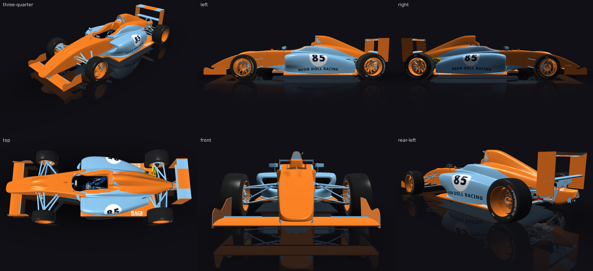
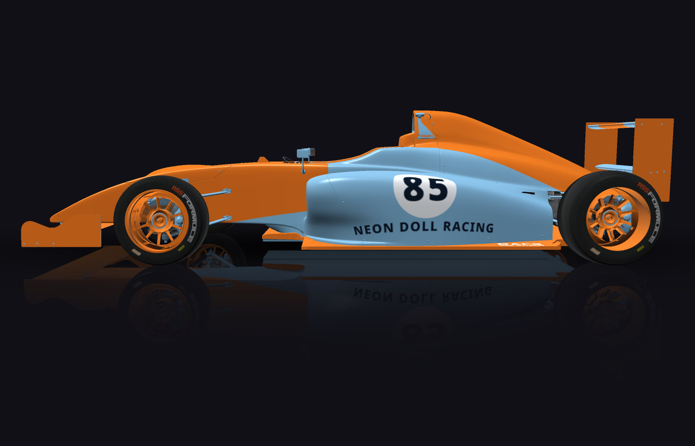
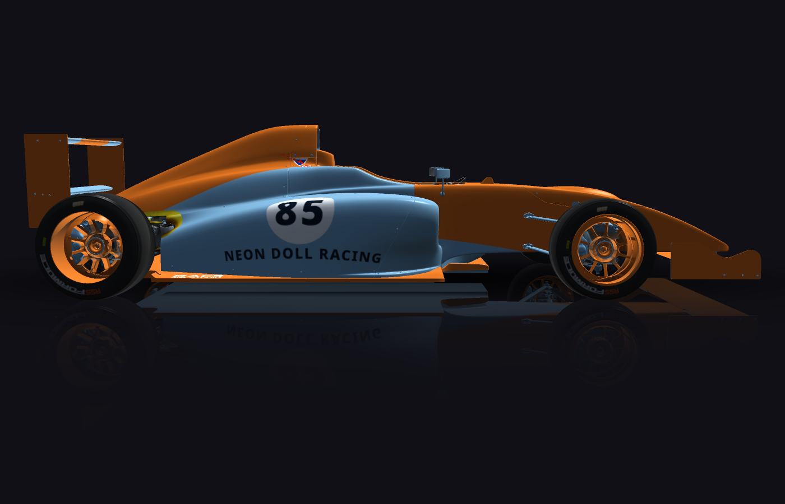

autolivery
Gulf-style, number 85, Neon Doll Racing, number readable from trackside. Use a white roundel with the number inside it, whole and fully visible, clear of every edge. An orange centre stripe runs the full length of the car, nose to tail, continuing over the rear wing.
passed in round 1 — in the editor's inbox, for a person to accept or discard
Round 1 — passed
render pass · fitment pass · critic pass · second look decided
Gulf-style livery on the RSS Formula RSS 4: powder-blue body base, orange centre stripe running nose to tail (450 mm, laid out by find_space across every panel it crosses, including over the rear wing), orange ground-effect kit (front splitter/nose wings, side floor edges, rear diffuser), orange wheels. Race number 85 in a white roundel with NEON DOLL RACING in near-black navy directly below, on both sidepod flanks (left_mid / right_mid) at the layout's own sizes — 162 mm and 155 mm capitals for the number, ~60 mm for the name — with minOnCar/minVisible 1 and 30 mm margin on the roundels. A blue fill on the untextured metal sheet was added so the co-located chassis part matches instead of showing stock artwork. check_fitment: 0 fatal, 0 high.

critic
missing
- Gulf-style colour scheme (powder-blue base, orange stripe) (top/three-quarter view: body is predominantly orange with a light-blue centre band, the reverse of the brief's powder-blue base with a narrow orange stripe)
answered false
notes
- The overall colour balance is inverted from the Gulf style: the body reads as mostly orange with a light-blue centre stripe, rather than the traditional powder-blue body with a narrow orange centre stripe. Rebalance so blue is the dominant base colour and the orange stripe is a slim central band, per Gulf convention.
- Because the base/stripe proportions are reversed, the livery does not read as authentically Gulf-style at a glance, even though the correct hues are used.
second look, closer


17 low finding(s), which fail nothing
- unseen: metal-base is 14% visible from trackside (124 points cast), on a panel measured at 100% — so it is in the part of the panel something else stands in front of; 9 of its points are directly under RR_RIM_Mesh_SUB0, 8 of its points are directly under HUB_RR_MESH_SUB1, 8 of its points are directly under RSS4_RR_Caliper_Mesh, 5 of its points are directly under SUP_RR_UPPER_Mesh_GEO003, 3 of its points are directly under Cylinder021, 3 of its points are directly under Chassis_C, 2 of its points are directly under RSS4_Chassis_Main_SUB0, 2 of its points are directly under SUP_LR_LOWER_Mesh_GEO, 2 of its points are directly under REAR_SHELL, 2 of its points are directly under RSS2_Rain_G, 1 of its points are directly under LF_Steer_Arm_Mesh_A, 1 of its points are directly under GEAR_SELECTOR_1_Mesh, 1 of its points are directly under DISC_RR_MESH, 1 of its points are directly under DISC_LR_MESH, 1 of its points are directly under HUB_LR_MESH_SUB1, 1 of its points are directly under SUSP_LR_spring_mesh
- outside-safe: 35% of centre-centre_nose_lower is outside the readable part of centre_nose_lower, which measurement put at [0.224, 0.229, 0.102, 0.047]
- outside-safe: 35% of centre-centre_nose is outside the readable part of centre_nose, which measurement put at [0.139, 0.273, 0.271, 0.216]
- outside-safe: 32% of centre-centre_rear_lower is outside the readable part of centre_rear_lower, which measurement put at [0.524, 0.418, 0.349, 0.296]
- unmirrored: centre-left_mid_upper is at [0, 0, 0.935, 1] and centre-right_mid_upper at [0.062, 0, 0.938, 1]; a mirrored pair would put centre-right_mid_upper at y 0
- unmirrored: centre-left_mid_lower_2 is at [0.667, 0, 0.333, 1] and centre-right_mid_lower_2 at [0, 0, 0.334, 1]; a mirrored pair would put centre-right_mid_lower_2 at y 0
- unmirrored: roundel-left is at [0.226, 0.253, 0.25, 0.498] and roundel-right at [0.514, 0.256, 0.24, 0.478]; a mirrored pair would put roundel-right at y 0.249
- unmirrored: number-left is at [0.246, 0.31, 0.208, 0.383] and number-right at [0.534, 0.311, 0.2, 0.368]; a mirrored pair would put number-right at y 0.306
- unmirrored: team-left is at [0.007, 0.771, 0.687, 0.11] and team-right at [0.275, 0.755, 0.718, 0.109]; a mirrored pair would put team-right at y 0.119
- unseen: centre-centre_nose_upper is 24% visible from trackside (196 points cast), on a panel measured at 59% — so it is in the part of the panel something else stands in front of; 64 of its points are directly under NOSE_MAIN_mesh_SUB0, 2 of its points are directly under FW_METALS_Main_mesh
- unseen: base is 29% visible from trackside (118 points cast), on a panel measured at 100% — so it is in the part of the panel something else stands in front of; 4 of its points are directly under Object175, 3 of its points are directly under REAR_SHELL, 2 of its points are directly under INT_MAIN_Mesh_1, 1 of its points are directly under Object110, 1 of its points are directly under HOOD_Mesh, 1 of its points are directly under NOSE_MAIN_mesh_SUB0, 1 of its points are directly under Cylinder021
- unseen: aero-centre_mid is 15% visible from trackside (174 points cast), on a panel measured at 49% — so it is in the part of the panel something else stands in front of; 11 of its points are directly under REAR_SHELL, 11 of its points are directly under INT_MAIN_Mesh_1, 7 of its points are directly under RSS4_Chassis_Main_SUB0, 1 of its points are directly under Object220
- unseen: rims is 32% visible from trackside (119 points cast), on a panel measured at 100% — so it is in the part of the panel something else stands in front of; 5 of its points are directly under RSS4_RR_Caliper_Mesh, 2 of its points are directly under DISC_RR_MESH
- stripe-across: centre-left_mid_upper is part of the stripe "centre", and which way it runs could not be checked: find_panels does not name both of left_mid_upper's axes as one of along the car, across it, or up and down (x runs diagonally: 0.65 across the car and 0.64 up and down. Look at this panel with render_car before running a stripe on it.).
- stripe-across: centre-right_mid_upper is part of the stripe "centre", and which way it runs could not be checked: find_panels does not name both of right_mid_upper's axes as one of along the car, across it, or up and down (x runs diagonally: 0.65 across the car and 0.64 up and down. Look at this panel with render_car before running a stripe on it.).
- stripe-across: centre-right_mid_lower_2 is part of the stripe "centre", and which way it runs could not be checked: find_panels does not name both of right_mid_lower_2's axes as one of along the car, across it, or up and down (x runs diagonally: 0.77 up and down and 0.64 across the car. Look at this panel with render_car before running a stripe on it.).
- stripe-across: centre-left_mid_lower_2 is part of the stripe "centre", and which way it runs could not be checked: find_panels does not name both of left_mid_lower_2's axes as one of along the car, across it, or up and down (x runs diagonally: 0.77 up and down and 0.64 across the car. Look at this panel with render_car before running a stripe on it.).